Capítulo 5 Validación de supuestos
El modelo de regresión lineal es una buena herramienta de estimación, sin embargo, en dicho proceso se hace uso de diversos supuestos que deben cumplirse para que los resultados obtenidos sean acordes a la teoría desarrollada, que hasta el momento no se le había prestado gran atención. Estos supuestos los vimos en la definición 2.1 para el caso de regresión lineal simple. A manera de resumen y de forma general los supuestos que deben cumplirse son: la esperanza de los errores \(\epsilon\) tienen media cero, es decir, \(\mathbf{E}[\epsilon]=0\), varianza constante sobre los errores, es decir, \((Var(\epsilon)=\sigma^2)\), los errores no se encuentran correlacionados entre si, es decir, \((Cov(\epsilon_{i},\epsilon_{j})\forall i\neq j)\), por último, los errores tienen distribución normal con media cero y varianza \(\sigma^2\), es decir, \(\epsilon \sim \mathbf{N}(0,\sigma^2).\)
Es por ello que analizaremos y verificaremos el cumplimiento de los supuestos, la mayoría de estas validaciones se basan bajo el principio del análisis de residuales.
5.1 Análisis de residuales
Anteriormente definimos los residuales como \(e_{i}=y_{i}-\hat{y_{i}}\), el cual su nombre deriva de la obtención del residual o diferencia que existe entre la línea de regresión ajustada y los valores observados de la variable respuesta \(y_{i}\); esta cantidad residual es un buen ajuste debría ser cercana a cero, pues cuando esto sucede se tiene que \(y_{i} \approx \hat{y_{i}}\) debido a ello se opta por trabajar con los residuales para verificar el cumplimiento de los supuestos.
Muchas pruebas usan como base modificaciones o tipos específicos de residuos, es por esta razón que se indagará sobre los diversos tipos más conocidos.
residuales ordinarios
Los residuales ordinarios o simplemente residuales, miden la diferencia entre la línea de regresión y la variable respuesta \(y_{i}\), es por ello que se definen como:
\[e_{i}=y_{i}-\hat{y_{i}} \ \ \ \ \ \ \ \ i=1,2,\ldots ,n.\] La desventaja que presentan estos residuales, es que depende de cada \(y_{i}\) por lo que observaciones atípicas puede generar grandes residuales, ocasionando que pueda existir gran variabilidad al considerarse los errores en forma conjunta.
residuales estandarizados
Una forma de disminuir esta variabilidad consiste en dividir a los residuales \(e_{i}\) entre la varianza global, es decir:
\[d_{i}=\frac{e_{i}}{\sqrt{\sigma^2}}\]
Una propiedad importante es que si \(e_{i}\) sigue una distribución normal, entonces al dividirlo entre la desviación estándar, se tiene que los residuales estandarizados siguen una distribución normal estándar.
residuales estudentizados
Los residuales estudentizados se basan en la idea de involucrar la varianza de cada observación en el cálculo de los residuales, pues teóricamente los residuales no tiene varianza constante.
Como se demostrará en el corolario A (ver \(Apéndice\)), se sabe que \(e=(I-H)\underline{Y}\); en donde \(H=X(X'X)^{-1}X'\) la definimos como matriz sombrero. De esta manera calculando la varianza de los errores se tiene:
Corolario 6 Sea \(\underline{e}\) los residuales del modelo entonces la varianza de \(\underline{e}\) está dada por:
\[Var(\underline{e})=\sigma^2(I-H)\]
Demostración:
\[Var(\underline{e})=Var((I-H)\underline{Y})\]
\[Var(\underline{e})=(I-H)'Var(\underline{Y})(I-H)\] Sabemos que \((I-H)\) es simétrica (ver \(apéndice\))
\[Var(\underline{e})=(I-H)(I-H)Var(\underline{Y})\] Sabemos quue \((I-H)\) es idempotente (ver \(apéndice\))
\[Var(\underline{e})=(I-H)Var(\underline{Y})\] Por el teorema B (demostrado en \(apéndice\))
Teorema B Sea una variable de interés \(\underline{Y}\), llamada dependiente, relacionada con dos o más variables explicativas\(x_{1},x_{2},\ldots,x_{k}\), entonces:
a) \(\mathbf{E}[\underline{Y}]= \beta_{0}+\beta_{1}x_{1}+\beta_{2}x_{2}+ \ldots + \beta_{k}x_{k}.\)
b) \(Var(\underline{Y})= \sigma^2.\)
\[\therefore Var(\underline{e})=\sigma^2(I-H). \blacksquare\]
La varianza de cada residual no es constante para todas las observaciones es por ello que el resultado depende de la siguiente forma:
\[Var(e_{i})=\sigma^2(1-h_{ii})\] donde \(h_{ii}\) correspondiente al \(i-ésimo\) elemento de la diagonal de la matriz sombrero \(H\).
Cada residual se divide entre su varianza obteniendo de esta forma lo que se conoce como residuales estudentizados, los cuales se definen como:
\[r_{i}=\frac{e_{i}}{\sqrt{\hat{\sigma}^2(1-h_{ii})}}\] Debido a la construcción de los residuales estudentizados se logra estandarizar de mejor manera a los residuales del modelo. Si se cumple que cada residual \(e_{i}\) sigue una distribución normal entonces los residuales estudentizados siguen una distribución aproximada a una \(t-student\) con \(n-k-1\) grados de libertad.
5.2 Supuesto de normalidad
Como se mencionó, en el modelo de regresión lineal se tiene el supuesto de que los errores tienen distribución normal con media cero y varianza \(\sigma^2\). Debido a la construcción del modelo, este supuesto puede presentar desviaciones en la distribución, en la cual, serias desviaciones de ésta puede ocasionar que las estimaciones dadas sean erróneas, principalmente se pueden observar en la construcción de intervalos de confianza o pruebas de hipótesis, ya que las cantidades pivotales se basan en la premisa de normalidad en los errores, por lo que desviaciones significativas provocan una mala aproximación o cálculo; además que pruebas de hipótesis subsecuentes basadas en distribuciones como la \(t\) de Student o la \(F\) de Fisher presentan malas estadísticas para la toma de decisiones.
5.2.1 Validación del supuesto de normalidad
Para validar el supuesto de normalidad existen varios métodos, el primero de ellos es de forma visual, a través de las denominadas gráficas cuantil-cuantil, o también denominadas QQ-plot, ésta gráfica es muy usada para comprobar si una muestra sigue una determinada distribución. El procedimiento se basa en ordenar los residuales \((e_{i})\) en orden ascendente los cuales se mostrarán en el eje horizontal \(X\), mientras que el eje vertical \(Y\) se muestra al valor esperado de la estadística de orden de una distribución normal. El valor esperado se denota como:
\[\mathbf{E}[e_{i}]=\phi^{-1}\left[\frac{i-\frac{1}{2}}{n}\right].\]
Donde la función \(\phi^{-1}\) es la distribución inversa de una normal. Si los resultados se comportaran de manera normal la gráfica de cuantiles de los errores pareciera que siguen una marcada línea de \(45^\circ\), por lo que valores fuera de la línea recta indicarían una distribución no normal.
\[\mbox{Diversas distribuciones en gráficas QQ-plot}\]
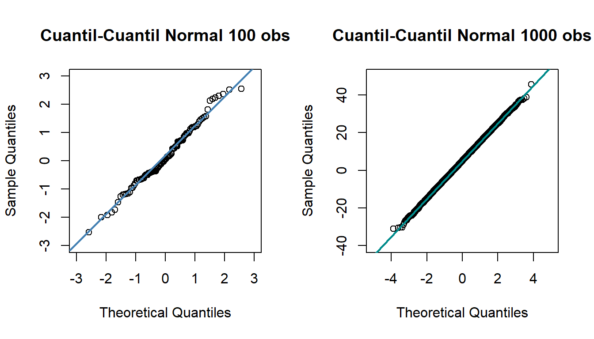
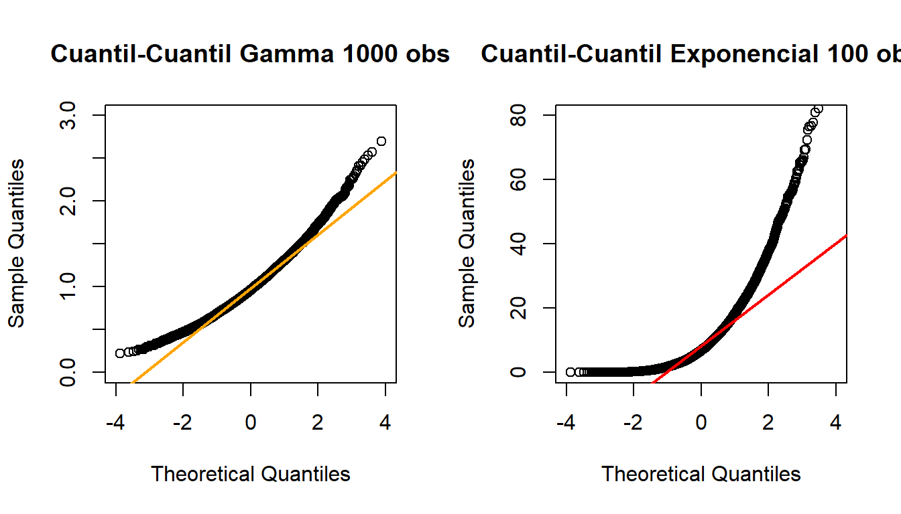
Lo que podemos observar, es que las dos muestras superiores siguen una distribución normal, sin embargo, la primera tiene pocas observaciones por lo que algunos puntos se encuentran cercanos a la recta azul, línea que representa la distribución normal ideal, pero pocas veces la muestra toca esta línea y las colas presentan mucha variabilidad, la gráfica de la derecha al tener tamaño de muestra mayor, se aprecia que muchos datos caen sobre la recta, presentando ligeras irregularidades en la cola, tanto superior como inferior, por lo que se puede asumir, que las muestras siguen una distribución normal.
Por último, las gráficas inferiores, representan a una muestra con distribución gamma y exponencial, respectivamente, al no seguir una distribución normal, los datos salen completamente de la línea recta marcada, por lo que es evidente que no se comportan con normalidad.
Otro procedimiento para validar el supuesto de normalidad, es mediante pruebas de bondad de ajuste, sin embargo hay que tener cuidado, ya que los errores no son independientes entre si, debido a que están correlacionados, mientras que las pruebas de bondad de ajuste asumen precisamente que las observaciones son independientes entre si. Windfried Stute demostró que pruebas como la Anderson-Darling convergen a la distribución teórica aunque la independencia de los errores no se cumpla, debido a que se basan en el proceso empírico. Sin embargo, las pruebas deben de usarse como una medida de aproximación y no como regla de decisión.
5.3 Supuesto de linealidad
En la construcción del modelo de regresión lineal se asume que la relación entre \(X_{j}\) y \(Y\) es lineal, para cada \(j \in 1,\ldots,k\), con \(k\) el número de variables regresoras con el que fue ajustado el modelo.
Sin embargo, la anterior afirmación no siempre se cumple, es por ello que se valida este supuesto de manera gráfica. Debido a lo complejo que es una gráfica en más de tres dimensiones, se verá que en el modelo de regresión múltiple con \(k\) regresores se ajusta un hiperplano de dimensión \(k\).
Cuando \(k\geq 4\) se recomienda realizar gráficas individuales para comprobar la linealidad de la variable explicativa \(X_{j}\) y la variable del interés \(Y\).
Aunque este método proporciona una buena aproximación para saber si dos variables son lineales o no, este tipo de análisis puede proporcionar conclusiones erróneas cuando los coeficientes tienen magnitudes distintas ya que se analiza la relación marginal de la variable respuesta con cada variable explicativa. Es por ello que se opta trabajar mediante un análisis de residuales, en este análisis se grafican los errores estandarizados contra los valores observados de cada variable explicativa, en el cual el cumplimiento de la hipótesis daría como resultado ruido blanco con media 0 y varianza \(\sigma^2.\)
Cuando se detecte problemas de linealidad entre variables explicativas y la variable de interés, el ajuste del modelo es malo, debido a que la varianza presenta problemas en la estimación y por consecuencia estadísticas, se usa \(\sigma^2\) en su desarrollo lo cual hereda errores en sus cálculos.
5.4 Supuesto de homocedasticidad
Se dice que una muestra es homocedástica cuando la varianza es constante a lo largo de todas las observaciones, es decir, no varia conforme se presentan nuevas observaciones. Mientras una muestra heterocedástica se presenta cuando hay variaciones de la varianza conforme se presentan nuevas observaciones.
Las desviaciones en el supuesto de homocedasticidad pueden observarse mediante gráficas, la más óptima para el análisis es realizar una gráfica de dispersión en el que se muestre la relación entre los valores ajustados \(\underline{\hat{Y}}\) contra los residuales estandarizados \(d_{i}\). Si la varianza es constante entonces la gráfica fluctuará entre el eje horizontal de manera simétrica, asemejando a una distribución uniforme, y sin seguir algún tipo de patrón, ya que típicamente se considera que la mayor parte de los errores deben estar contenidos en franjas horizontales delimitados por el eje vertical entre \(y=-2\) y \(y=2\).
\[\mbox{Muestra homocedástica y una Muestra heterocedástica}\]
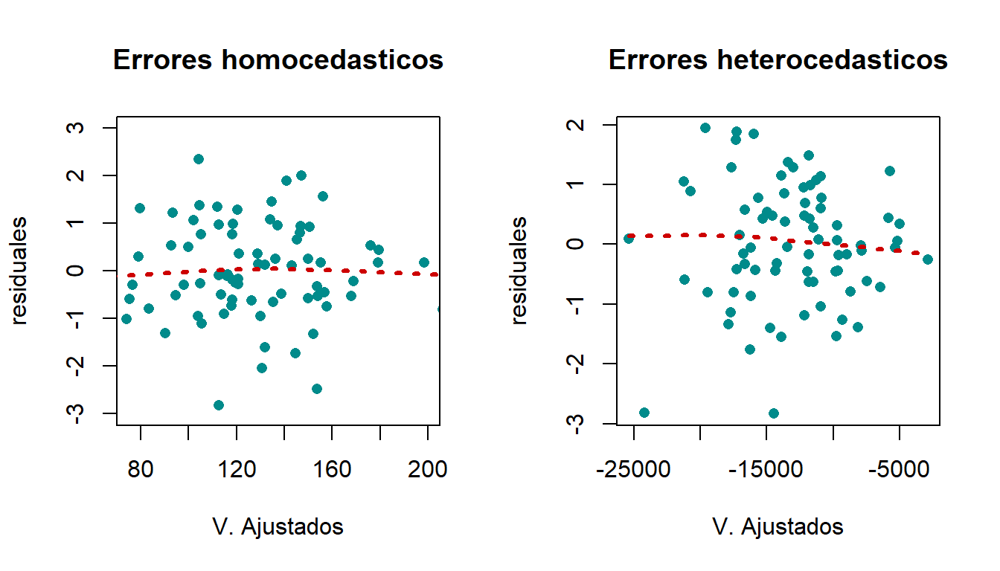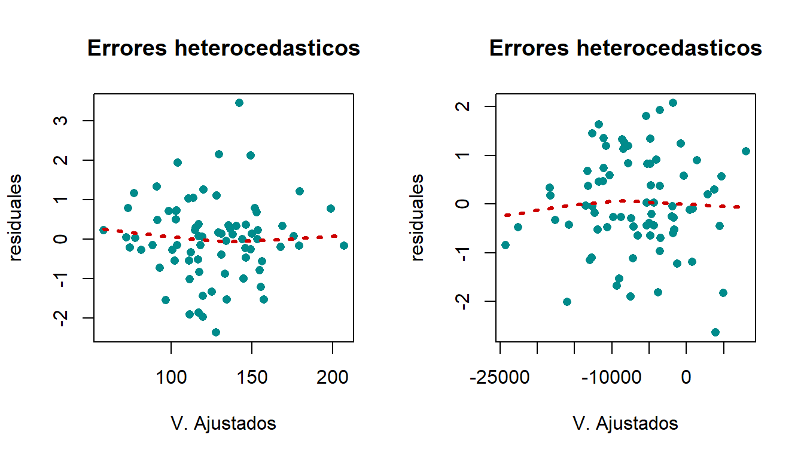
Como estamos observando, la primera imagen corresponde a una muestra homocedástica pues los errores se distribuyen a lo largo del eje horizontal, además que éstos fluctúan entre \(y=-2\) y \(y=2\) distribuidos de una manera simétrica. Mientras que la segunda gráfica muestra que los errores fluctúan entre -2 y 2, sin embargo los resultados siguen un patrón de tender hacia a la media conforme se presentan nuevas observaciones, simulando un megáfono, por lo que se dice que la muestra sigue una tendencia heterocedástica.
Por último las gráficas ubicadas en la parte inferior, muestran como conforme se presentan nuevas observaciones los errores se alejan de la media, por lo que son muestras heterocedásticas.
Existen métodos más formales para probar homocedasticidad mediante pruebas de hipótesis, una de las que se desarrollarán a continuación.
5.4.1 Prueba de Breusch-Pagan
La prueba de Breusch-Pagan fue desarrollada en 1979 por los estadísticos Trevor Breusch y Adrian Pagan, se utiliza para determinar si una muestra presenta problemas de homocedasticidad o heterocedasticidad en un modelo de regresión lineal. El método consiste en analizar si la varianza estimada de los residuales de una regresión depende directamente de los valores obtenidos de las variables independientes, uno de los supuestos de esta prueba es que los errores deben comportarse con normalidad.
La prueba de Breusch-Pagan contrasta como hipótesis nula el cumplimiento de homocedasticidad, por lo que se tiene la siguiente prueba de hipótesis.
\[\textbf{H}_0: \ \mbox{Muestra homocedástica i.e.} \ \ \ \sigma^2_{j}=\sigma^2 \ \ \ \ vs \ \ \ \ \textbf{H}_a: \ \mbox{Muestra Heterocedástica i.e.} \ \ \ \sigma^2_{j} \neq \sigma^2 \ \ \ \ \forall \ \ j = 1,\ldots,n.\]
El procedimiento se basa en calcular los residuales estandarizados al cuadrado \(\left( \tilde{e}^2_{j}=\frac{e^2_{j}}{\sigma^2}\right)\); Con ello se realiza una regresión lineal tomando como variable respuesta a cada \(\tilde{e}_{j}\) al cuadrado y con variables explicativas dentro del conjunto de variables exógenas Z:
\[\tilde{e}_{j}^{2}=\gamma_{0}+\gamma_{1}Z_{1}+ \ldots + \gamma_{n}Z_{n}\]
Después se procede a calcular la suma de cuadrados de la regresión del modelo con los errores estandarizados divididos entre 2, \(\frac{SC_{reg}}{2},\) donde \(SC_{reg}=\underline{Y}'(H-\frac{1}{n}J)\underline{Y}'\); Breusch-Pagan descubrieron que este estadístico sigue asintóticamente una distribución ji-cuadrada con \(k\) grados de libertad, siendo \(k\) el número de variables del modelo. Por lo que la región de rechazo para \(H_0\) sucede cuando la estadística \(\frac{SC_{reg}}{2}\) es mayor al cuantil de una ji-cuadrada con \(k\) grados de libertad con un nivel de significancia \(\alpha\), es decir:
\[\frac{SC_{reg}}{2}> \chi^{2(\alpha)}_{k}.\] En otro caso no se tiene evidencia sificiente para rechazar la hipótesis nula.
En \(R\) la prueba de Breusch-Pagan puede ser fácilmente implementada, suponga que se tiene una muestra en el que se ha implementado el procedimiento de regresión lineal en \(R \ (lm(Y \sim X))\), por lo que aplicándo el siguiente código se tiene:
studentized Breusch-Pagan test
data: modelo1
BP = 0.026689, df = 1, p-value = 0.8702Se observa que en el anterior caso particular, la prueba supone como válida la hipótesis nula; la homocedasticidad de muestra debido a que el \(p-value\) es alto, (de 0.8702), lo que conlleva a que no se rechace la hipótesis nula con un nivel de significancia \(\alpha=0.05\), por lo que se acepta que la muestra se comporta con homocedasticidad.
5.4.2 Prueba de White
La prueba de White es similar a la prueba de Breusch-Pagan, sin embargo, se considera que ésta prueba es más general pues no requiere que los errores sigan una distribución normal.
La prueba de White fue propuesta por Hilbert White en 1980, como alternativa a la prueba de Breusch-Pagan, el procedimiento es similar, se analiza si la varianza estimada de los residuos de una regresión depende directamente de los valores obtenidos.
El test contrasta como hipótesis nula el cumplimiento de homocedasticidad, por lo que se tiene la siguiente prueba de hipótesis.
\[\textbf{H}_0: \ \mbox{Muestra homocedástica i.e.} \ \ \ \sigma^2_{j}=\sigma^2 \ \ \ \ vs \ \ \ \ \textbf{H}_a: \ \mbox{Muestra Heterocedástica i.e.} \ \ \ \sigma^2_{j} \neq \sigma^2 \ \ \ \ \forall \ j = 1,\ldots,n.\]
El procedimiento se basa en calcular los residuales estandarizados al cuadrado \(\left( \tilde{e}^2_{j}=\frac{e^2_{j}}{\sigma^2}\right)\); Con ello se realiza una regresión lineal tomando como variable respuesta a cada \(\tilde{e}_{j}\) al cuadrado y el producto cruzado de variables explicativas dentro del conjunto de variables exógenas Z:
\[\tilde{e}_{j}^{2}=\gamma_{0}+\gamma_{1}Z_{1i}+ \ldots + \gamma_{k}Z_{ki}+\gamma_{k+1}Z^2_{1k}+\ldots + \gamma_{k+k}Z_{1k}Z_{ki}+\gamma{k+k+1}Z_{2k}Z_{1k}+\ldots + \gamma{tk}Z^2_{kk}+\epsilon\] Del anterior ajuste de regresión se procede a calcular el coeficiente de determinación \(R^2=\frac{SC_{reg}}{SC_{T}}\) y sea n el tamaño de la muestra, entonces la estadística \(nR^2\) sigue asintóticamente una distribución ji-cuadrada con \(k\) grados de libertad, siendo \(k\) el número de variables del modelo original.Por lo que la región de rechazo para \(H_0\) sucede cuando la estadística \(nR^2\) es mayor al cuantil de una ji-cuadrada con \(k\) grados de libertad con un nivel de significancia \(\alpha\), es decir:
\[nR^2>\chi^{2(\alpha}_{k}).\] En otro caso no se tiene evidencia suficiente para rechazar la hipótesis nula.
Se observa que en el anterior caso particular la prueba de White supone como válida la hipótesis nula la homocedasticidad de la muestra, debido a que el \(p-value\) es alto, (de 0.5244), lo que conlleva a que no se rechace la hipótesis nula con un nivel de significancia \(\alpha=0.05\), por lo que se acepta que la muestra se comporta con homocedasticidad.
5.4.3 Ejemplo
En las secciones anteriores tomamos los datos de CALLCENT y comenzamos a resolver el problema que el gerente nos planteó de poder predecir, de alguna manera, el tiempo promedio que tardarían en procesar un número dado de facturas.
Se ha recolectado, durante un periodo de 30 días, la información sobre el número de facturas procesadas (en nuestrio caso definimos como nuestra variable \(x\)) y el tiempo que tardan las mismas (que hemos definido como nuestra variable \(y\)).
Verificamos gráficamente que hubiera una relación lineal entre las variables, estimamos los parámetros del modelo de regresión lineal simple con intercepto y sin intercepto. Luego construimos intervalos de confianza para los parámetros estimados, para el valor esperado y la predicción. Realizamos pruebas de hipótesis sobre los estimadores de los parámetros. Calculamos el coeficiente de determinación y realizamos un análisis de varianza sobre el modelo seleccionado.
Como se mencionó en nuestro capítulo debemos verificar que los supuestoshechos para ajustar este modelo de regresión lineal simple se cumplen.
Esta vez vamos a ocupar la función en R para el modelo de regresión que es lm().
M1=lm(Tiempo~Facturas)
M1
Call:
lm(formula = Tiempo ~ Facturas)
Coefficients:
(Intercept) Facturas
0.64171 0.01129 Residuales
Entonces primero calcularemos los diferentes residuales vistos. Se presentaran solamente los primeros 6 residuos de las 30 observaciones y un diagrama de dispersión.
- \(\textbf{Los residuales ordinarios}\)
head(M1$residuals) 1 2 3 4 5 6
-0.2241648 0.4807915 -0.4645390 -0.1014177 -0.2113303 -0.2966252 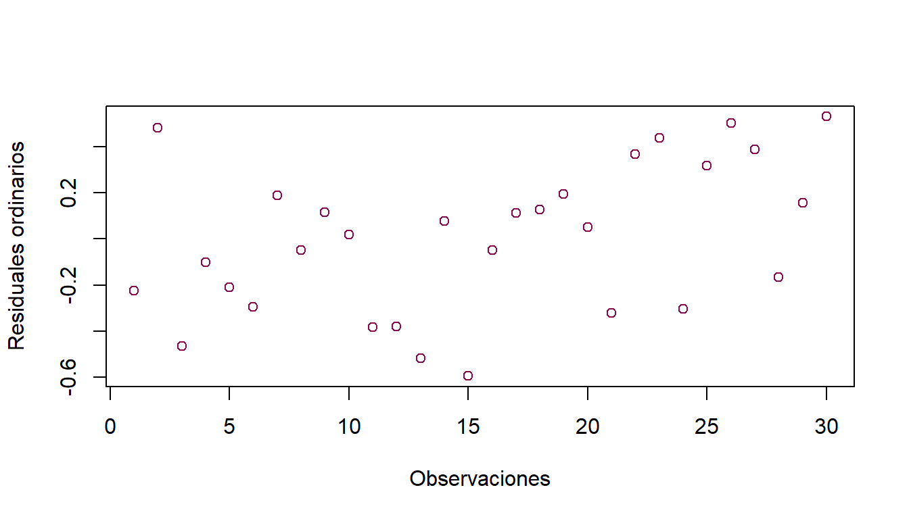
- \(\textbf{Los residuales estandarizados}\)
head(rstandard(M1)) 1 2 3 4 5 6
-0.6921686 1.5065958 -1.4483299 -0.3248760 -0.6625061 -0.9303669 plot(rstandard(M1),col="deeppink4",ylab="Residuales estandarizados", xlab="Observaciones")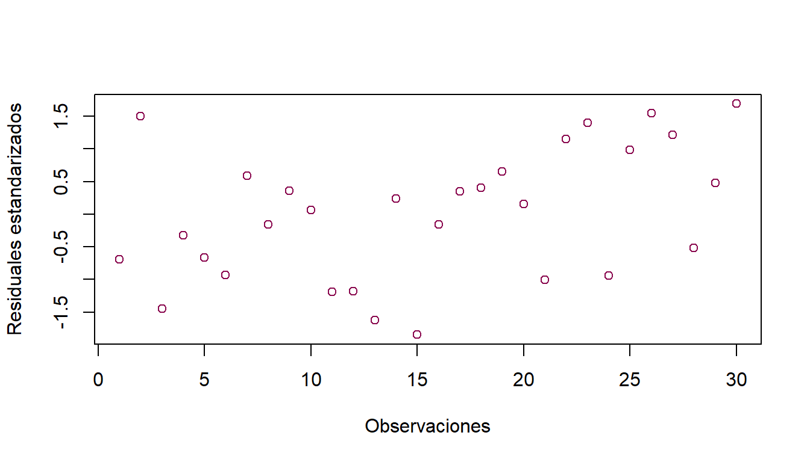
- \(\textbf{Los residuales estudentizados}\)
head(rstudent(M1)) 1 2 3 4 5 6
-0.6855868 1.5433247 -1.4786993 -0.3196249 -0.6557278 -0.9280596 plot(rstudent(M1),col="deeppink4",ylab="Residuales estudentizados", xlab="Observaciones")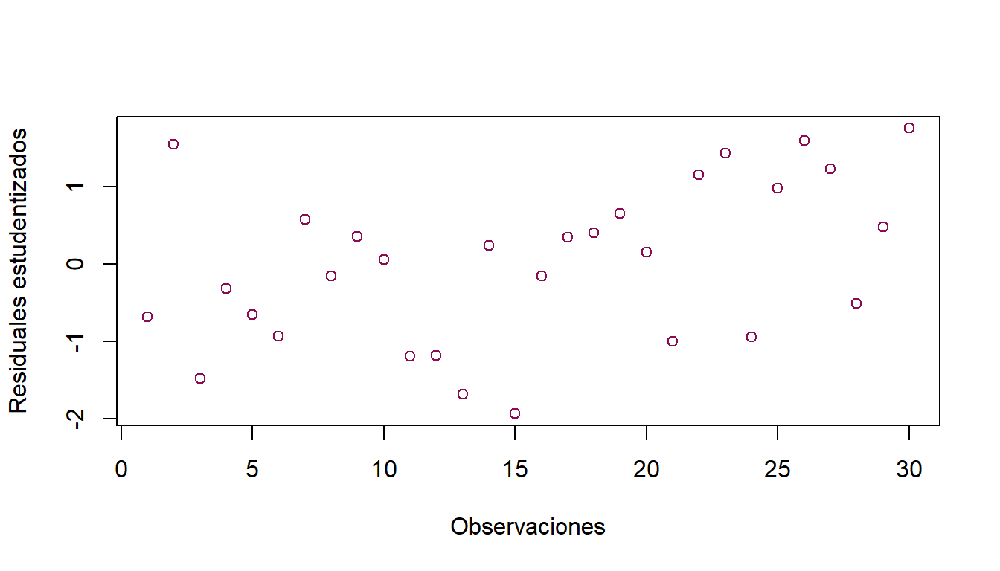
Validación de supuesto de normalidad
Para validar gráficamente la normalidad de los errores debemos graficar los errores contra los cuantiles de la distribución normal. Para esto aplicaremos la función en R qqnorm() y con qqline() obtenemos la recta diagonal que nos servirá para ver que tan lejos o cerca de la distribución normal están cayendo los residuales del modelo.
qqnorm(rstandard(M1),ylim = c(-2,2),xlim = c(-2,2))
qqline(rstandard(M1),distribution = qnorm,col="deeppink4")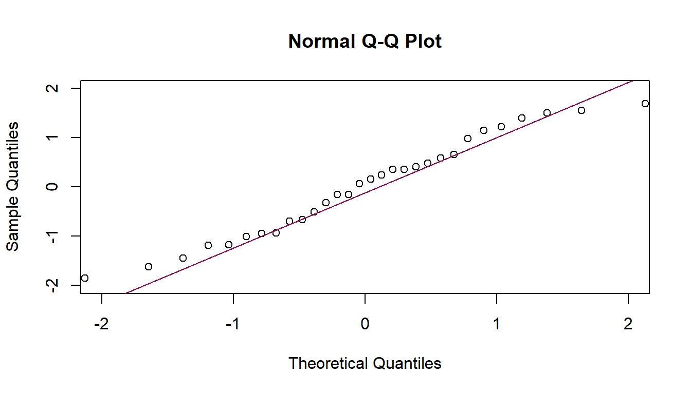
Podemos observar que la parte central de la distribución si se ajusta a una distribución normal, sin embargo, en los extremos los residuales ya no se comportan como una distribución normal.
Podemos aplicar la prueba de bondad de ajuste Lilliefors para normalidad vista en Bondad de Ajuste:
nortest::ad.test(rstandard(M1))
Anderson-Darling normality test
data: rstandard(M1)
A = 0.2675, p-value = 0.6615nortest::lillie.test(rstandard(M1))
Lilliefors (Kolmogorov-Smirnov) normality test
data: rstandard(M1)
D = 0.088454, p-value = 0.7946Como el valor del \(p-value\) es mayor al nivel de significancia \(\alpha=0.05\) entonces no rechazamos \(H_{0}\), es decir nuestros residuales tienen distribución normal.
Supuesto de linealidad
El supuesto de linealidad lo verificamos gráficamente haciendo el diagrama de dispersión entre las variables como lo hicimos anteriormente.

Como lo mencionamos en su tiempo al observar nuestros datos nos grita que existe una relación lineal entre las variable facturas y tiempo empleado en ellas.
Como mencionamos en el capítulo, también se pueden graficar los errores estandarizados contra los valores observados de la variable explicativa.
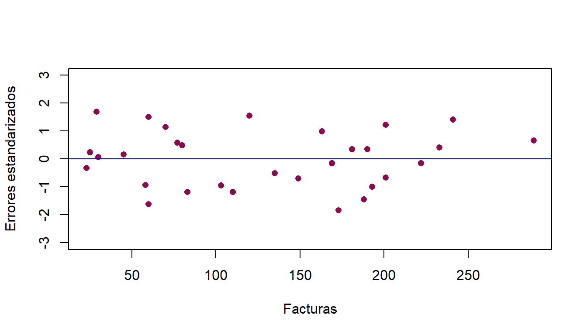
En la gráfica anterior se observa un patrón aleatorio de los residuales estandarizados, esto indica que el modelo lineal es adecuado.
Un punto igual de importante es que no hay presencia de datos atípicos, ya que ningún residual está fuera de las bandas superior e inferior. Datos influyentes tampoco están presentes, pues no hay residuales que estén en alguna dirección lejana a los demás.
Supuesto de Homocedasticidad
Se dice que una muestra es homocedástica cuando la varianza es constante a lo largo de todas las observaciones, es decir, no varia conforme se presentan nuevas observaciones.
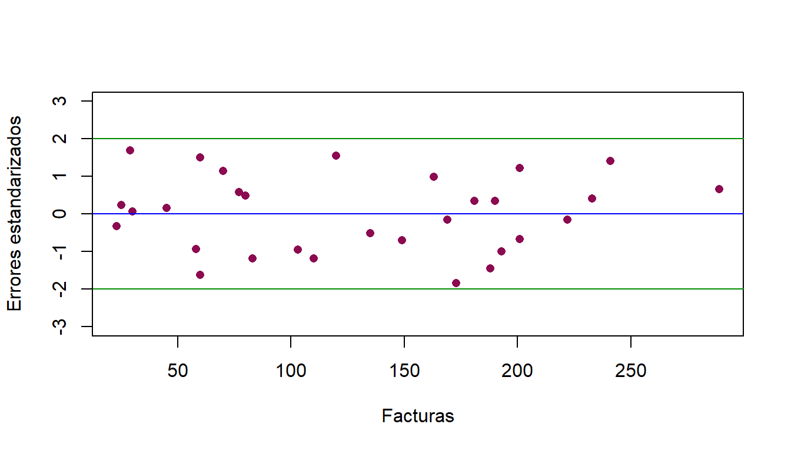
- Si la varianza es constante entonces la gráfica fluctuaráentre el eje horizontal de manera simétrica, y sin seguir algún patrón, y se espera que la mayor parte de los errores estén contenidos en franjas horizontales delimitados por el eje entre -2 y 2. En éste ejemplo la dispersión regular de los residuales dentro de las Bandas superior e inferior y que no haya residuales que se alejen tanto de la Banda 0, indican varianza constante.
Adicionalmente aplicaremos las pruebas vistas en el capítulo para tener certeza estadística de la validez del supuesto de homocedasticidad.
Prueba de Breusch-Pagan
bptest(M1)
studentized Breusch-Pagan test
data: M1
BP = 0.13226, df = 1, p-value = 0.7161El valor del \(p-value\) es mayor, por lo que la hipótesis de homocedasticidad no se rechaza.
Prueba White
[1] "Dia" "Facturas" "Tiempo" dataset=data.frame(x, y)
model1= VAR(dataset, p = 1)
#whites.htest(model1)El \(p-value\) es mayor, por lo que la hipótesis de homocedasticidad no se rechaza.
Supuesto de No Correlación
El estadístico de Durbin-Watson es una estadística de prueba que se utiliza para detectar la presencia de autocorrelación (una relación entre los valores separados el uno del otro por un intervalo de tiempo dado) en los residuales de un análisis de la regresión.
Las hipótesis que se plantean en la prueba de Durbin-Watson es:
\[\textbf{H}_0: \mbox{La autocorrelación de los residuales es igual a } 0 \ \ \ vs \ \ \ \textbf{H}_a: \mbox{La autocorrelación de los residuales es} \neq 0\]
En R se puede hacer la prueba de Durbin Watson con el comando dwtest().
dwtest(M1)
Durbin-Watson test
data: M1
DW = 1.7604, p-value = 0.2558
alternative hypothesis: true autocorrelation is greater than 0De acuerdo con el \(p-value\) los residuales no están correlacionados.
Conclusiones
Los supuestos hechos sobre los residuales se cumplen, por lo tanto el modelo propuesto es totalmente adecuado para predecir el tiempo promedio que tomará procesar un número de facturas dado:
\[\mbox{Tiempo promedio estimado}=0.6417+0.01129* \mbox{Número de Facturas Procesadas} \] * \(\textbf{Puntos importantes}\)
El gerente del departamento de ventas de CALLCENT podrá predecir el tiempo promedio en el que se procesará un número de facturas dado utilizando el modelo ajustado. Se sugiere realizar estimaciones dentro del rango de la dispersión de los datos, de lo contrario la variabilidad aumenta y podría tenerse estimaciones no tan precisas.
La ausencia de datos atípicos e influyentes indica que no hay factores que estén afectando el proceso de facturas y su tiempo empleado.
La cantidad de horas en la que tardarían en procesar una factura oscila en el intervalo (0.0096 hrs, 0.01296 hrs) a una confianza del 95%. Puntualmente se estima que las horas requeridas para procesar una factura es 0.01129 hrs.
4.- En este caso, el valor de \(\hat{\beta_{0}}\) (intercepto) no tiene una interpretación de acuerdo al contexto del problema.
5.5 Valores outlier e influyentes
Una vez que se ha verificado el cumplimiento de los supuestos en el modelo de regresión, se procede a examinar puntualmente cada observación en búsqueda de valores atípicos o de gran influencia en el modelo.
5.5.1 Valores outlier
Los valores atípicos, también conocidos por la terminología inglesa \(outlier\), son observaciones de la muestra aleatoria que no se comportan como el resto de los elementos que conforman el conjunto de datos, gráficamente, la observación con valor atípico no sigue la tendencia que de manera general sigue la muestra aleatoria, lo veremos en la siguiente figura, en el cual el punto rojo sobresale de toda la muestra marcada por puntos azules, por lo que la observación puede ser catalogada como un outlier o valor atípico.
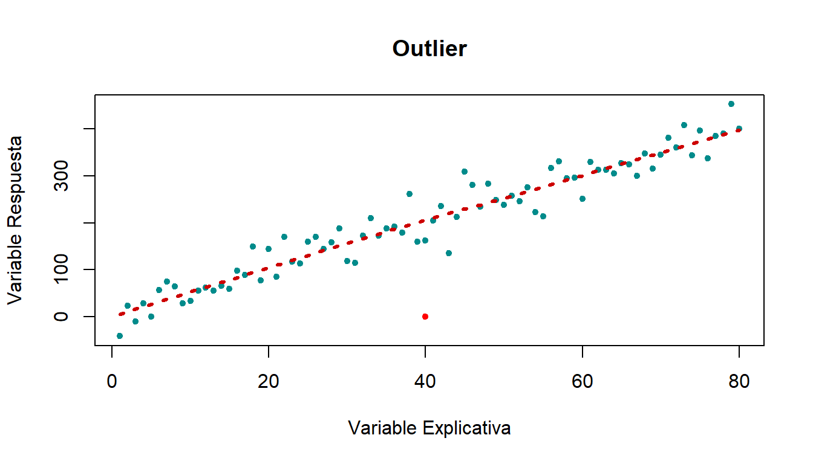
Otra manera de detectar a los posibles valores atípicos es por medio de un análisis de residuales. Dicho análisis consiste en obtener los residuales, ya sean los estandarizados o estudentizados y observar si éstos son mayores o menores a comparación de un punto crítico con nivel de significancia \(\alpha\). Si se escoge trabajar con los residuales estandarizados sigue una distribución normal con media 0 y varianza \(\sigma^2\). Por lo que los residuales superiores o inferiores del punto crítico \(\pm Z_{1-\alpha/2}\) son considerados como un posible \(outlier\) con un nivel de significancia \(\alpha\). Por otra parte, si se decide trabajar con los residuales estudentizados entonces el punto crítico está determinado por los residuales que se encuentren por arriba o por abajo de la banda determinada por el cuantil \(\pm \ t_{1-\alpha/2,n-k-1}.\) Es decir, se tiene evidencia de un valor atípico con nivel de significancia \(\alpha\) cuando suceda alguna de las siguientes dos desigualdades:
\[\mid d_{i} \mid \geq Z_{1-\alpha/2}\] \[\mid r_{i}\mid \geq t_{1-\alpha/2,n-k-1}\]
Continuando con el ejemplo anterior, los posibles valores atípicos pueden ser visualizados en la siguiente figura, con un nivel de confianza del 99%, y usando los residuales estandarizados para el análisis.
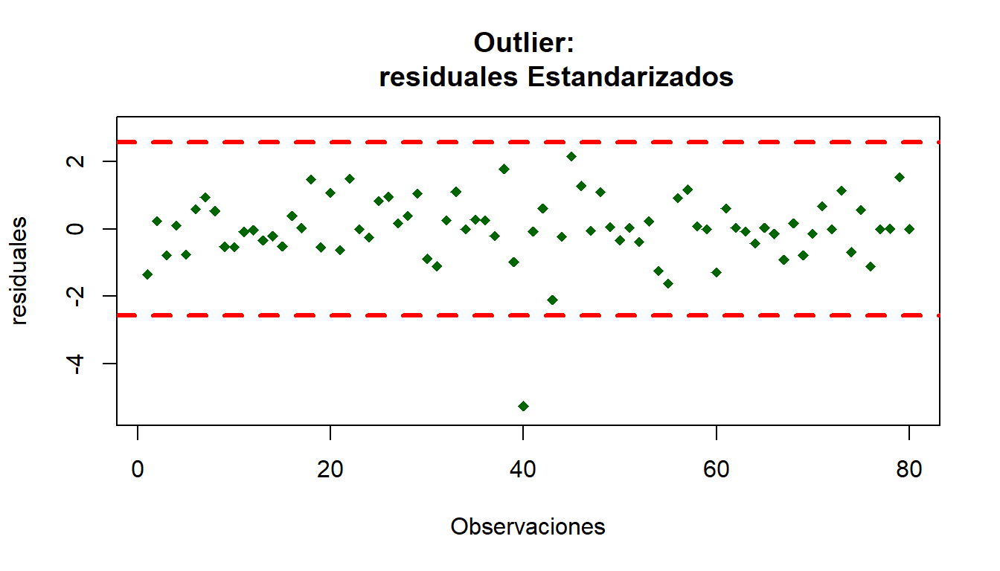
Como se mencionó, es más que evidente que el punto atípico corresponde a la observación 40 la cual contrasta y sale de las bandas marcadas por el cuantil de la normal.
Generalmente se procede a eliminar observaciones atípicas, sin embargo, se recomienda realizar un análisis de influencia de las observaciones que presentan problemas de \(outlier\), ya que aunque se trata de puntos atípicos, puede resultar beneficioso para el modelo ya que puede que sean significativas para el modelo, por lo que eliminar estas observaciones puede ocasionar conflictos o desviaciones en la estimación.
5.5.2 Valores influentes
Los valores influentes, son observaciones que tienen una gran influencia en el ajuste del modelo, es decir, remover estas observaciones ocasionaría un cambio drástico en el modelo de regresión, ya que dichas observaciones tienen gran influencia en el cálculo de los estimadores de los parámetros o en las predicciones.
Es por esta propiedad por lo que se busca analizar estos puntos para medir su impacto en el modelo, para identificar si el \(outlier\) encontrado puede ser eliminado o no de la muestra.
Por ejemplo, imagine que tiene una muestra aleatoria conformada por 8 observaciones, en la cual 6 elementos son iguales y dos con diferente valor, tal como se muestra a continuación:
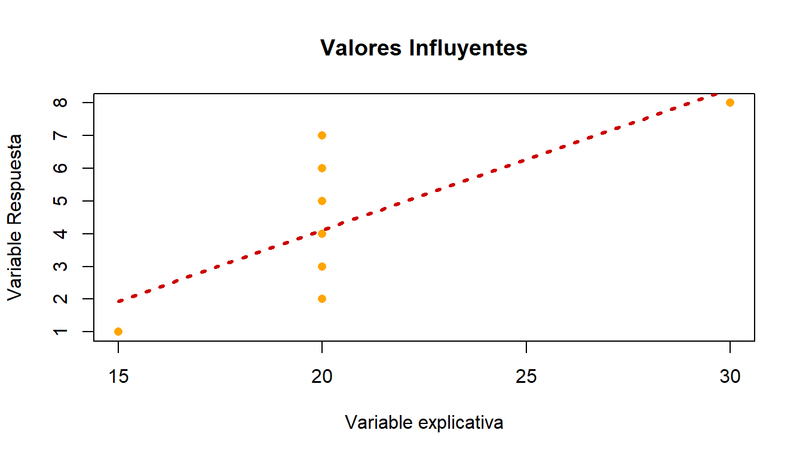
El modelo tiene asociado una línea de regresión, sin embargo, si se quitan los extremos o valores atípicos, el modelo cambiaría rotundamente.
Un método para identificar la influencia del modelo es a través de los puntos palanca o leverage. El método consiste en examinar la medida entre el punto y el punto medio de los datos, a este punto también se le conoce como \(centroide\). Para ello se observa cuales son las observaciones influyentes examinando la matriz \(H\), o matriz sombrero, en el cual se pondrá especial atención a los elementos de la diagonal de la matriz \(H\), se denotará como \(h_{ii}\) al i-ésimo elemento de la diagonal \(H\), este último elemento se le denomina como el término de punto palanca o leverage.
Dado que el promedio de los valores leverage es \(\frac{\sum_{i=1}^{n}h_{ii}}{n},\) entonces cuando un punto sea mayor que el doble de la media de los puntos palanca, es decir, cuando se cumpla que:
\[h_{ii} \geq 2 \ \frac{\sum_{i=1}^{n}h_{ii}}{n}\]
Se puede concluir que dicha observación tiene un punto palanca muy grande. Por lo que se puede concluir que hay evidencia de que se trate de un punto influyente, sin embargo, para afirmar la anterior premisa es necesario el uso de otros métodos estadísticos, uno de ellos es la llamada distancia Cook.
La estadística de Cook propone calcular la distancia cuadrática entre el modelo ajustado y el modelo ajustado sin la \(i-ésima\) observación. La cual puede expresarse como:
\[C_{i}=\frac{\left(\underline{\hat{Y}}-\underline{\hat{Y}}_{(i)}\right)\left(\underline{\hat{Y}}-\underline{\hat{Y}}_{(i)}\right)}{CM_{error}\sum_{i=1}^{n}h_{ii}} \ \ \ \ \ \forall \ i \in [1,n].\]
Donde \(\underline{\hat{Y}}\) hace referencia al modelo ajustado de la forma \(X\underline{\hat{\beta}}\) mientras que \(\underline{\hat{Y}}_{(i)}\) hace referencia al modelo ajustado sin la i-ésima observación de forma \(X\underline{\hat{\beta}}_{(i)}\).
De esta manera, se calcula la distancia de \(Cook\) para cada observación, con la finalidad de evaluar el cambio del modelo sin la i-ésima observación. Se considera que una observación es influyente si el cambio del modelo con y sin observación varía mucho entre si, aunque no hay una medida establecida, (Hair, Tatham,Anderson y Black, 1998) sugiere que si la distancia de \(Cook\) de la i-ésima observación es mayor o igual a 1 se tiene evidencia de que la observación analizada tiene gran influencia en el modelo, mientras que para otros autores como (Bollen y Jackman, 1985) mencionan que las distancias mayores que \(\frac{4}{n}\) presenta indicios de influencia en el modelo.